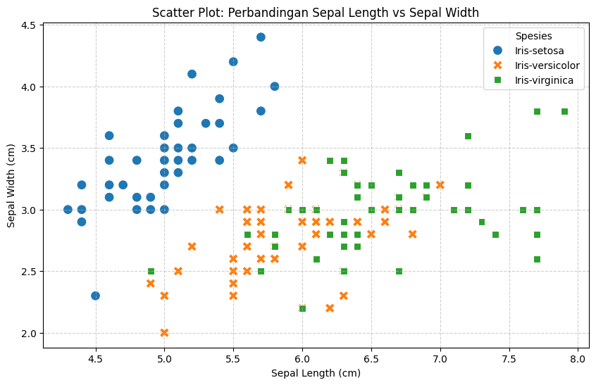

Data Understanding: Eksplorasi Dataset Iris#
Pada tahap ini, saya akan melakukan proses Data Understanding untuk mengenal lebih dalam dataset Iris. Proses ini sangat penting dalam siklus data mining agar kita memahami karakteristik, kualitas, dan pola awal yang ada pada data sebelum melangkah ke tahap pemrosesan yang lebih rumit.
import pandas as pd
import seaborn as sns
import matplotlib.pyplot as plt
# Memuat dataset dari file CSV
df = pd.read_csv('IRIS.csv')
# Menampilkan 10 data pertama untuk melihat gambaran awal
df.head(10)
| sepal_length | sepal_width | petal_length | petal_width | species | |
|---|---|---|---|---|---|
| 0 | 5.1 | 3.5 | 1.4 | 0.2 | Iris-setosa |
| 1 | 4.9 | 3.0 | 1.4 | 0.2 | Iris-setosa |
| 2 | 4.7 | 3.2 | 1.3 | 0.2 | Iris-setosa |
| 3 | 4.6 | 3.1 | 1.5 | 0.2 | Iris-setosa |
| 4 | 5.0 | 3.6 | 1.4 | 0.2 | Iris-setosa |
| 5 | 5.4 | 3.9 | 1.7 | 0.4 | Iris-setosa |
| 6 | 4.6 | 3.4 | 1.4 | 0.3 | Iris-setosa |
| 7 | 5.0 | 3.4 | 1.5 | 0.2 | Iris-setosa |
| 8 | 4.4 | 2.9 | 1.4 | 0.2 | Iris-setosa |
| 9 | 4.9 | 3.1 | 1.5 | 0.1 | Iris-setosa |
1. Deskripsi Kolom#
Setelah memuat data, saya mengidentifikasi bahwa dataset ini memiliki 5 kolom. Berikut adalah rinciannya:
Nama Atribut |
Jenis Data |
Deskripsi |
|---|---|---|
Sepal Length |
Numerik |
Panjang kelopak bunga (cm) |
Sepal Width |
Numerik |
Lebar kelopak bunga (cm) |
Petal Length |
Numerik |
Panjang mahkota bunga (cm) |
Petal Width |
Numerik |
Lebar mahkota bunga (cm) |
Species |
Kategorikal |
Jenis spesies (Iris-setosa, Iris-versicolor, Iris-virginica) |
Dataset ini terdiri dari 150 baris, di mana masing-masing spesies memiliki 50 sampel data.
# Menghitung statistik deskriptif
stats = df.describe().T
stats['median'] = df.select_dtypes(include=['number']).median()
stats['mode'] = df.select_dtypes(include=['number']).mode().iloc[0]
# Menampilkan tabel statistik yang sudah difilter agar mudah dibaca
stats[['mean', 'median', 'mode', 'std', 'min', 'max']]
| mean | median | mode | std | min | max | |
|---|---|---|---|---|---|---|
| sepal_length | 5.843333 | 5.80 | 5.0 | 0.828066 | 4.3 | 7.9 |
| sepal_width | 3.054000 | 3.00 | 3.0 | 0.433594 | 2.0 | 4.4 |
| petal_length | 3.758667 | 4.35 | 1.5 | 1.764420 | 1.0 | 6.9 |
| petal_width | 1.198667 | 1.30 | 0.2 | 0.763161 | 0.1 | 2.5 |
2. Memahami Nilai Pusat Data#
Berdasarkan tabel statistik di atas, saya menemukan beberapa poin menarik:
Sepal Length: Memiliki rata-rata (mean) 5.84 dan median 5.80. Karena nilainya sangat dekat, data ini cenderung terdistribusi secara normal.
Petal Length: Memiliki rentang yang sangat lebar, dari 1.0 hingga 6.9. Hal ini menandakan adanya variasi yang kontras antar spesies.
Modus: Nilai 1.5 pada Petal Length dan 0.2 pada Petal Width sangat sering muncul, yang setelah saya selidiki, nilai-nilai kecil ini didominasi oleh spesies Iris-setosa.
# Membuat visualisasi untuk melihat persebaran data
plt.figure(figsize=(10, 6))
sns.scatterplot(data=df, x='sepal_length', y='sepal_width', hue='species', style='species', s=100)
plt.title('Scatter Plot: Perbandingan Sepal Length vs Sepal Width')
plt.xlabel('Sepal Length (cm)')
plt.ylabel('Sepal Width (cm)')
plt.legend(title='Spesies')
plt.grid(True, linestyle='--', alpha=0.6)
plt.show()

3. Analisis Visualisasi#
Melalui grafik scatter plot di atas, saya bisa menceritakan hubungan antar spesies:
Iris-setosa (Biru): Terlihat sangat menonjol karena membentuk kelompok (cluster) yang terpisah dari spesies lainnya. Mereka memiliki karakteristik Sepal Width yang lebar namun Sepal Length yang cenderung pendek.
Iris-versicolor & Iris-virginica: Kedua spesies ini memiliki area yang sedikit beririsan (overlap). Ini menunjukkan bahwa mereka memiliki kemiripan fisik yang lebih dekat dibandingkan dengan Setosa.
4. Pengalaman Menggunakan Tools#
Selama proses pengerjaan, saya bereksperimen menggunakan Orange untuk melihat visualisasi secara cepat tanpa kode. Namun, dengan menggunakan Jupyter Notebook, saya bisa menyusun laporan yang lebih detail dan menghitung nilai statistik yang lebih presisi untuk ditampilkan dalam web statis ini.